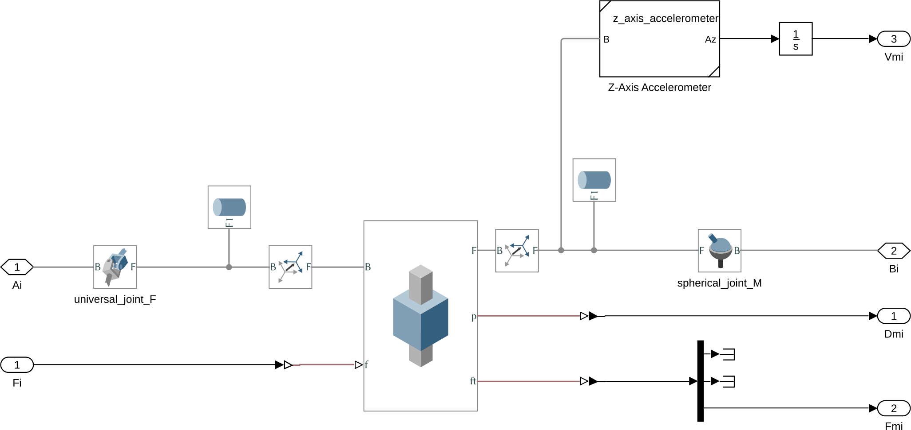

Stewart Platform - Simscape Model
Table of Contents
In this document is explained how the Simscape model of the Stewart Platform is implemented.
It is divided in the following sections:
- section 1: is explained how the parameters of the Stewart platform are set for the Simscape model
- section 2: the Simulink configuration (solver, simulation time, …) is shared among all the Simulink files. It is explain how this is done.
- section 3: All the elements (platforms, struts, sensors, …) are saved in separate files and imported in Simulink files using “subsystem referenced”.
- section 4: The simscape model for the fixed base and mobile platform are described in this section.
- section 5: The simscape model for the Stewart platform struts is described in this section.
1 Parameters used for the Simscape Model
The Simscape Model of the Stewart Platform is working with the stewart structure generated using the functions described here.
All the geometry and inertia of the mechanical elements are defined in the stewart structure.
By updating the stewart structure in the workspace, the Simscape model will be automatically updated.
Thus, nothing should be changed by hand inside the Simscape model.
The main advantage to have all the parameters defined in one structure (and not hard-coded in some simulink blocs) it that we can easily change the Stewart architecture/parameters in a Matlab script to perform some parametric study for instance.
2 Simulation Configuration - Configuration reference
As multiple simulink files will be used for simulation and tests, it is very useful to determine good simulation configuration that will be shared among all the simulink files.
This is done using something called “Configuration Reference” (documentation).
Basically, the configuration is stored in a mat file conf_simscape.mat and then loaded in the workspace for it to be accessible to all the simulink models.
It is automatically loaded when the Simulink project is open. It can be loaded manually with the command:
load('mat/conf_simscape.mat');
It is however possible to modify specific parameters just for one simulation using the set_param command:
set_param(conf_simscape, 'StopTime', 1);
3 Subsystem Reference
Several Stewart platform models are used, for instance one is use to study the dynamics while the other is used to apply active damping techniques.
However, all the Simscape models share some subsystems using the Subsystem Reference Simulink block (documentation).
These shared subsystems are:
Fixed_Based.slx- Fixed base of the Stewart PlatformMobile_Platform.slx- Mobile platform of the Stewart Platformstewart_strut.slx- One strut containing two spherical/universal joints, the actuator as well as the included sensors. A parameteriis initialized to determine what it the “number” of the strut.
These subsystems are referenced from another subsystem called Stewart_Platform.slx shown in figure 1, that basically connect them correctly.
This subsystem is then referenced in other simulink models for various purposes (control, analysis, simulation, …).

Figure 1: Simscape Subsystem of the Stewart platform. Encapsulate the Subsystems corresponding to the fixed base, mobile platform and all the struts.
4 Subsystem - Fixed base and Mobile Platform
Both the fixed base and the mobile platform simscape models share many similarities.
Their are both composed of:
- a solid body representing the platform
- 6 rigid transform blocks to go from the frame \(\{F\}\) (resp. \(\{M\}\)) to the location of the joints. These rigid transform are using \({}^F\bm{a}_i\) (resp. \({}^M\bm{b}_i\)) for the position of the joint and \({}^F\bm{R}_{a_i}\) (resp. \({}^M\bm{R}_{b_i}\)) for the orientation of the joint.
As always, the parameters that define the geometry are taken from the stewart structure.

Figure 2: Simscape Model of the Fixed base

Figure 3: Simscape Model of the Mobile platform
5 Subsystem - Struts
5.1 Strut Configuration
For the Stewart platform, the 6 struts are identical.
Thus, all the struts used in the Stewart platform are referring to the same subsystem called stewart_strut.slx and shown in Figure 4.
This strut as the following structure:
- Universal Joint* connected on the Fixed base
- Prismatic Joint* for the actuator
- Spherical Joint* connected on the Mobile platform
This configuration is called UPS.
The other common configuration SPS has the disadvantage of having additional passive degrees-of-freedom corresponding to the rotation of the strut around its main axis. This is why the UPS configuration is used, but other configuration can be easily implemented.

Figure 4: Simscape model of the Stewart platform’s strut
Several sensors are included in the strut that may or may not be used for control:
- Relative Displacement sensor: gives the relative displacement of the strut.
- Force sensor: measure the total force applied by the force actuator, the stiffness and damping forces in the direction of the strut.
- Inertial sensor: measure the absolute motion (velocity) of the top part of the strut in the direction of the strut.
There is two main types of inertial sensor that can be used to measure the absolute motion of the top part of the strut in the direction of the strut:
- a geophone that measures the absolute velocity above some frequency
- an accelerometer that measures the absolute acceleration below some frequency
Both inertial sensors are described bellow.
6 Other Elements
6.1 Payload
This Matlab function is accessible here.
Function description
function [payload] = initializePayload(args) % initializePayload - Initialize the Payload that can then be used for simulations and analysis % % Syntax: [payload] = initializePayload(args) % % Inputs: % - args - Structure with the following fields: % - type - 'none', 'solid', 'flexible', 'cartesian' % - h [1x1] - Height of the CoM of the payload w.r.t {M} [m] % This also the position where K and C are defined % - K [6x1] - Stiffness of the Payload [N/m, N/rad] % - C [6x1] - Damping of the Payload [N/(m/s), N/(rad/s)] % - m [1x1] - Mass of the Payload [kg] % - I [3x3] - Inertia matrix for the Payload [kg*m2] % % Outputs: % - payload - Struture with the following properties: % - type - 1 (none), 2 (solid), 3 (flexible) % - h [1x1] - Height of the CoM of the payload w.r.t {M} [m] % - K [6x1] - Stiffness of the Payload [N/m, N/rad] % - C [6x1] - Stiffness of the Payload [N/(m/s), N/(rad/s)] % - m [1x1] - Mass of the Payload [kg] % - I [3x3] - Inertia matrix for the Payload [kg*m2]
Optional Parameters
arguments
args.type char {mustBeMember(args.type,{'none', 'solid', 'flexible', 'cartesian'})} = 'none'
args.K (6,1) double {mustBeNumeric, mustBeNonnegative} = 1e8*ones(6,1)
args.C (6,1) double {mustBeNumeric, mustBeNonnegative} = 1e1*ones(6,1)
args.h (1,1) double {mustBeNumeric, mustBeNonnegative} = 100e-3
args.m (1,1) double {mustBeNumeric, mustBeNonnegative} = 10
args.I (3,3) double {mustBeNumeric, mustBeNonnegative} = 1*eye(3)
end
Add Payload Type
switch args.type case 'none' payload.type = 1; case 'solid' payload.type = 2; case 'flexible' payload.type = 3; case 'cartesian' payload.type = 4; end
Add Stiffness, Damping and Mass properties of the Payload
payload.K = args.K; payload.C = args.C; payload.m = args.m; payload.I = args.I; payload.h = args.h;
6.2 Ground
This Matlab function is accessible here.
Function description
function [ground] = initializeGround(args) % initializeGround - Initialize the Ground that can then be used for simulations and analysis % % Syntax: [ground] = initializeGround(args) % % Inputs: % - args - Structure with the following fields: % - type - 'none', 'solid', 'flexible' % - K [3x1] - Translation Stiffness of the Ground [N/m] % - C [3x1] - Translation Damping of the Ground [N/(m/s)] % % Outputs: % - ground - Struture with the following properties: % - type - 1 (none), 2 (solid), 3 (flexible) % - K [3x1] - Translation Stiffness of the Ground [N/m] % - C [3x1] - Translation Damping of the Ground [N/(m/s)]
Optional Parameters
arguments
args.type char {mustBeMember(args.type,{'none', 'solid', 'flexible'})} = 'none'
args.K (3,1) double {mustBeNumeric, mustBeNonnegative} = 1e8*ones(3,1)
args.C (3,1) double {mustBeNumeric, mustBeNonnegative} = 1e1*ones(3,1)
end
Add Ground Type
switch args.type case 'none' ground.type = 1; case 'solid' ground.type = 2; case 'flexible' ground.type = 3; end
Add Stiffness and Damping properties of the Ground
ground.K = args.K; ground.C = args.C;